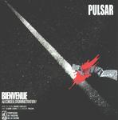

| Artist: | Pulsar |
| Title: | Bienvenue Au Conseil D'Administration |
| Label: | Musea FGBG 4355 |
| Length(s): | 69 minutes |
| Year(s) of release: | 2001/1982/1986 |
| Month of review: | [04/2002] |
| 1) | Il Fait Froid, Ici... | 4.12 |
| 2) | I. La Femme Au Bout Du Couloir, Ii. La Tempete, Encore, Iii. Accident-vision, Iv. Cri | 9.42 |
| 3) | Epreuve Numero Deux | 1.57 |
| 4) | Mirage De Neige | 1.26 |
| 5) | Sous Le Ciel Ou Courait La Tempete | 3.21 |
| 6) | Precautions Oratoires | 2.37 |
| 7) | La Luge Et La Limousine | 2.20 |
| 8) | Energie Saga | 4.44 |
| 9) | Futurs Interieurs | 6.19 |
Melodie Boreale
| 10) | Silence D'une Petite Fille | 3.48 |
| 11) | Croisiere | 5.07 |
| 12) | Perte De Vue | 6.41 |
| 13) | Melodie Boreale | 16.50 |
Il Fait Froid, Ici... opens with spacy sounds, overlaid with a male hummimg in the background, with the narration laid on top.
La Femme starts with the narration, accompanied by a clarinet, joined by strumming on an acoustic guitar. The second part starts with lone variation, with the narrator later being hunted by a ululating clarinet and drums, along with other instruments. The narration moves up into an Ange like intensity. Tranquil parts keep returning, just as often to return to the hauntedness. The saxophone of part 4 sounds what it should sound like: a cry (in the night).
Epreuve Numero Deux starts a keyboard track, later joined by guitar and saxophone.
Mirage De Neige sees the return of the narrator, accompanied by piano and keyboard tapestry (albeit a small one), sounding like an accordeon.
Sous Le Ciel Ou Courait La Tempete starts rather electronically, sort of like a computer overload, with narration, at times with the clarinet with sounds almost like a stork. It ends with a tranquil acoustic guitar.
Precautions Oratoires start with narration, replaced by highly strung guitars and keyboards. Eery. The narration returns forcefully.
La Luge Et La Limousine also has certain urgence about it, which is felt through all the instruments.
Energie Saga has a sound a bit more open than most other tracks, even though the urgency and hauntedness remain present, although the track appears to end peacefully, an illusion taken away be the sudden return of the haunted narrator.
Future Interieurs is worthy final of this album, combining the tranquil elements with urgency and hauntedness.
Melodie Boreale is, as might be expected, an album that is centered around keyboards. The overall atmosphere is that of a soundtrack. The music is tranquil and somewhat introspective.
Silence D'Un Petite Fille is a tranquil keybaord melody. Not very striking, but nice.
Croisiere has a keltic feel about it, with the use of harmonium and keyboard sound quite like bagpipes.
Perte De Vue reminds me of a river moving slowly along, with an electronic kuckuck sounding almost like a metronome across. As the track progresses a male hum comes along, thus creating an almost hypnotic effect. And as seems to happen with rivers more often: it gets wider as it moves along.
Title track Melodie Boreale sums up the album well enough, slowly moving keyboard tapestries, at times alternated with sounds of different types (animals, electronics, a voice even, making this track more than an instrumental when one didn't expect that anymore) to create some change. Nice background music.
Melodie Boreale apparently is a peaceful album keeping itself from becoming new age, but only just so at moments. Pretty good to get as a bonus with a strong enough album already, but not the best reason to get the album. Bienvenue... is what carries this disc, which seems to be Musea's point of view as well, considering that they just mention the four tracks as a bonus.